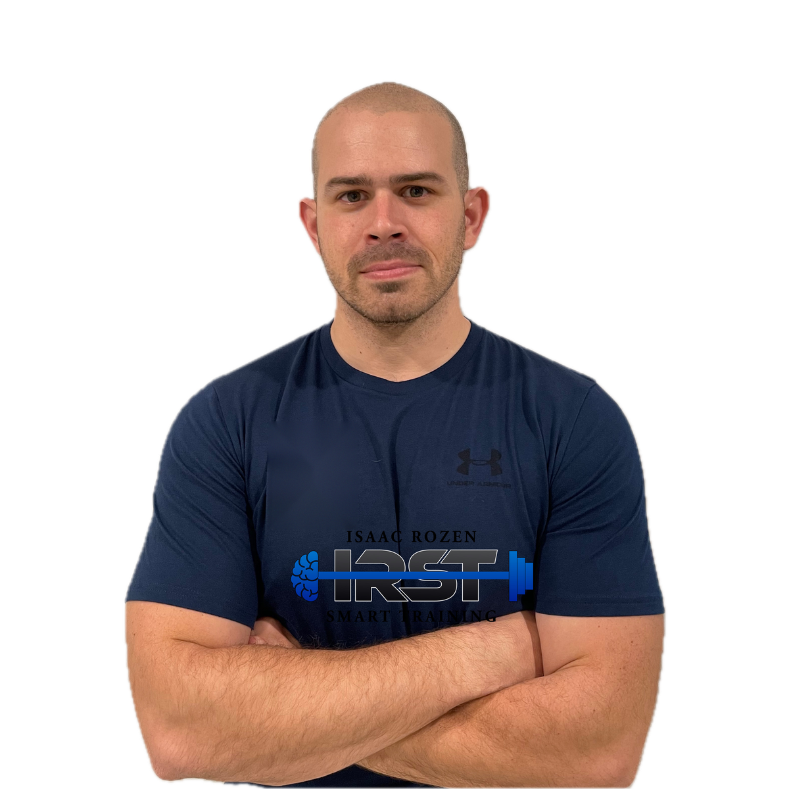

אודות
קצת עליי

הספורט תמיד היה חלק מרכזי בחיים שלי. ההתחלה שלי הייתה דווקא באומנויות הלחימה — עשר שנים של עשייה תחרותית, שלימדו אותי משמעת וסבלנות לתהליך ארוך-טווח, עוד לפני שהבנתי כמה זה יעזור לי בהמשך.
בצבא הייתי מדריך אימון גופני, וזה היה הרגע שבו הבנתי שהתחום הזה — לעזור לאנשים להיות טובים יותר בגוף שלהם — הוא מה שאני רוצה לעשות. משם המשכתי ללימודי חינוך גופני ולתעודת הדרכה במכללה לחינוך גופני ולספורט ע"ש זינמן במכון וינגייט.
שנים אחר כך שיחקתי רוגבי שביעיות, והגעתי לסגל הרחב של נבחרת ישראל. שם הבנתי עוד יותר את החשיבות של עבודה ויכולות גופניות להצלחה ולהנאה מהספורט. במקביל התחלתי לעבוד במעבדות למדעי הספורט — קודם במעבדה לביומכניקה במכון וינגייט, ואחר כך באוניברסיטת תל אביב. שם, בין המעבדה למגרש, נולדה ההבנה שמלווה אותי עד היום: הביצועים הכי טובים לא נבנים רק על ניסיון, וגם לא רק על מדידה — הם נבנים כשמשלבים בין השניים.
היום אני מלווה ספורטאי כדורסל, כדורגל, כדורעף וכדוריד — מגיל ההתבגרות ועד לרמה הבוגרת. אני עובד איתם בחדר הכושר, על המגרש, ובמבדקים שמראים בדיוק איפה הם עומדים — לא מרגישים, אלא יודעים.